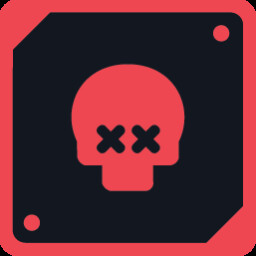
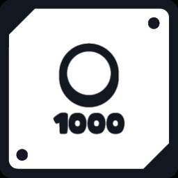
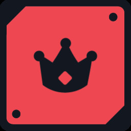

永久升级（按效果维度归类）
官方称永久升级提供「lasting advantages」并改变玩法动态。以下按策略维度拆条，便于你在商店里「对号入座」；并非官方分类名。
本页图片已改用 Steam 官方公开页面与成就页素材，并缓存到本地，离线可看；条目含义仍以游戏内正式文本为准。
在线素材增强版：图鉴图片优先采用 Steam 官方公开素材；没有单独图标的功能族使用官方预告片截图裁剪，并支持点击放大。

攻略站归类
金币与商店
成就 Treasure Hunter、Big Spender 分别与跨局累计金币、单局消费金币相关，可侧面印证经济线深度。商店中凡提高清盘金币、折扣、刷新或额外商品位的，都归此维度。

攻略站归类
揭示与信息增益
含扩大开局信息量、强化标记反馈、提供额外约束提示等，用于降低「纯赌格」频率。

攻略站归类
限时与陷阱对策
针对 Boss 倒计时或陷阱池膨胀后的盘面噪声；通常在中盘之后再优先投资。